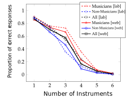

Separation and Count Estimation for Audio Sources Overlapping in Time and Frequency
PhD. Defense
Fabian-Robert Stöter
September 19th, 2019

How many speakers can you hear?
Example A
Example B
Can you hear out each instrument?
Example A
Example B
Overlap in Time and Frequency


The big picture
$$\mathbf{x}=\sum_{j=1}^{k}\mathbf{s}_j$$
Signal Processing
- Can we obtain $\mathbf{s}_j$ from $\mathbf{x}$?
- Source Separation
Signal Analysis
- Can we find $k$ from $\mathbf{x}$?
- Count Estimation
Applications
Separation
- Active Listening
- Hearing Aids
- Frontend for many other signal processing methods
Count Estimation
- First step to address the separation
- Crowd Surveillance
- Wildlife Monitoring
Source Separation
Scenario: Instruments playing Unison
 Trumpet
Trumpet
Scenario: Instruments playing Unison
 Cello
Cello
Scenario: Instruments playing Unison
Cello

Scenario: Instruments playing Unison
Cello
Instruments playing Unison
Trumpet + Cello

Research Question
- Unison has extreme overlap
- Separation Sandbox
Can we utilize modulations for separation of unison mixtures?
Contributions
- Known/Informed Modulation
- Unknown Modulation
Known Modulation
Modeling Instationary Signals
- TF Classification Hu 2002
- Source/filter model Durrieu 2010
- Spectral Comb Filter Cano 2012
Proposed
- Use Time Warping Stöter 2014
- Filter in time domain
- less artifacts
- required: accurate F0

MUSERC: MUlti SEnsor Recordings: Cello
Unknown Modulation
Modeling Instationary Signals
- HR-NMF Baedau 2011
- Modulation Tensor Barker 2013
Proposed
- Novel Representation
- Suitable Separation Model

Common Fate: groups common modulation textures to sources.
Common Fate: groups common modulation textures to sources.
Step 1: Short-Time Fourier Transform

$\mathbf{X} \in \mathbb{C}^{352 \times 279}$
Step 2: Common Fate Transform (CFT)

STFT Grid $\mathcal{G} \in \mathbb{C}^{32 \times 48 \times 11 \times 6}$ |

CFT $\mathcal{V} \in \mathbb{C}^{32 \times 48 \times 11 \times 6}$ |
In Detail

Compared to modulation spectrograms...
- CFT is computed using complex STFT $X$
- Easily invertible
- Models phase dependencies between neighbouring STFT entries
- Patches span/merge several frequency bins
- Results in modulation texture
Common Fate Model
- Using Non-Negative Tensor Factorization
Demo: Sax + Flute
Demo: Viola + Flute
Extension music separation
- Common fate transform + Deep Neural Networks
- Model from Uhlich 2015
- Improvements compared to STFT

Extension for real world data
Results SiSEC 2016

Summary
Processing Methods for Separation
- Unison Source Separation Scenario
- Importance of Modulations
- Informed by $F_0$ to apply time warping
- Common Fate Representation for unknown modulations
- Common Fate Model, a suitable Factorization Model
- Deep Common Fate, supervised separation
Source Count Estimation
Strategies to Count
Research Questions
- What are the limitations of subitizing for humans?
- Can we directly count/subitize audio sources?
- Can we build a machine to solve these tasks?
- Would a machine be subject to the same limitations?
Experiment I
What is the number of concurrent speakers?
- Experiment with English
- n=40
- "One-Two-Three-(Four)-Many"
- https://denumerate.app
Experiment II
What is the number of instruments in music?
- 12 music stimuli
- Unison mostly detected
- Musicians vs. Non-Musicians
- First large-scale web-audio based experiment (n=1168)

CountNet Demo
Further Contributions
Data
- Unison Dataset

- Cello Dataset

- DSD100, MUSDB18 Dataset
Software Packages
- commonfate
- musdb
- museval
Community
- SiSEC Organization 2016, 2018
- Interactive Evaluation
Fabian-Robert Stöter
Separation and Count Estimation for Audio Sources Overlapping in Time and Frequency